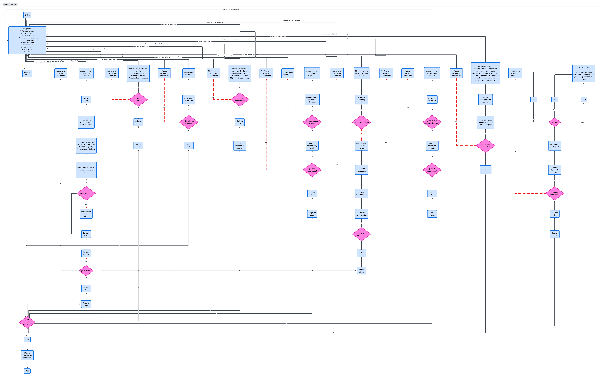

ESTRUCTURA TÉCNICA
Arquitectura del sistema
PowerFit está organizado mediante módulos y funciones que permiten administrar clientes, membresías, pagos, rutinas y estadísticas.
¿Cómo está organizado PowerFit?
El sistema recibe información del usuario, la procesa mediante diferentes funciones y estructuras de datos y finalmente muestra los resultados correspondientes.
Usuario
Ingresa información y selecciona las opciones disponibles en el sistema.
Menú principal
Permite acceder a las diferentes funciones administrativas.
Procesamiento
Las funciones validan y procesan la información utilizando la lógica del programa.
Resultado
El sistema muestra la información o resultado solicitado.
Módulos principales
Funciones que forman parte del sistema PowerFit.
Clientes
Permite registrar, buscar, consultar, editar y eliminar clientes.
- Registrar cliente
- Buscar cliente
- Mostrar clientes
- Información completa
- Editar cliente
- Eliminar cliente
Membresías
Administra los tipos de membresía y sus precios.
- Mensual: $500
- Trimestral: $1,300
- Anual: $4,500
Pagos
Permite consultar y actualizar el estado de pago de cada cliente.
- Pendiente
- Pagado
- Validación del cliente
Rutinas
Genera rutinas de acuerdo con el objetivo y día seleccionado.
- Ganar masa muscular
- Pérdida de grasa
- Mejorar condición física
Estadísticas
Procesa los datos registrados y muestra diferentes cantidades y porcentajes.
- Total de clientes
- Pagos
- Membresías
- Objetivos
Validaciones
Evitan que se registren datos incorrectos o incompletos.
- IDs repetidos
- Edad válida
- Campos obligatorios
- Manejo de errores
Diagrama de flujo
El siguiente diagrama representa el funcionamiento completo del sistema PowerFit, desde el menú principal hasta cada una de las opciones, validaciones y decisiones que puede realizar el usuario.

Estructuras de datos
El programa utiliza listas y diccionarios para organizar la información durante su ejecución.
Lista de clientes
Almacena los clientes registrados durante la ejecución del programa.
Diccionario de precios
Relaciona cada tipo de membresía con su precio.
Diccionario de rutinas
Organiza las rutinas según el objetivo y el día de entrenamiento.
Lógica y procesamiento
PowerFit utiliza diferentes elementos de programación para controlar el funcionamiento del sistema.
Condicionales
Permiten tomar decisiones dependiendo de la información proporcionada.
Ciclos
Se utilizan para repetir procesos y validar información hasta obtener un dato correcto.
Funciones
Dividen el programa en tareas específicas y facilitan su organización.
Manejo de errores
Permite controlar errores relacionados con la entrada de datos.
Flujo para generar una rutina
La rutina se obtiene utilizando el objetivo registrado del cliente y el día seleccionado.
Cliente
Se ingresa el ID del cliente.
Objetivo
Se identifica el objetivo registrado.
Día
Se selecciona el día 1, 2 o 3.
Rutina
Se muestran los ejercicios correspondientes.
Tecnologías utilizadas
Herramientas empleadas durante el desarrollo y representación del sistema.
Python
Lenguaje utilizado para desarrollar la lógica principal del sistema.
PSeInt
Utilizado para representar y planificar la lógica mediante pseudocódigo.
HTML
Utilizado para construir la estructura de la interfaz web de demostración.
CSS
Utilizado para diseñar y organizar visualmente la interfaz.
JavaScript
Utilizado para agregar interacción y representar las funciones del sistema en la interfaz web.
Visual Studio Code
Entorno utilizado para escribir y organizar los archivos del sistema.
Evidencia de funcionamiento
La interfaz web permite visualizar y probar las principales operaciones que forman parte de PowerFit.
Registro
Captura los datos principales del cliente, incluyendo membresía y objetivo.
Consulta
Permite buscar un cliente mediante su ID y consultar su información completa.
Pago
Permite cambiar el estado de pago de pendiente a pagado.
Rutina
Genera una rutina utilizando el objetivo del cliente y el día seleccionado.
Estadísticas
Calcula cantidades y porcentajes de los datos registrados.
Administración
Permite editar o eliminar los datos de un cliente.
Organización de los datos
En la versión principal desarrollada en Python, los clientes se almacenan en memoria mediante una lista mientras el programa está en ejecución. Los diccionarios permiten organizar los precios y las rutinas.
La página web funciona como una representación visual e interactiva de las funciones del sistema y utiliza JavaScript para permitir la demostración de dichas operaciones.